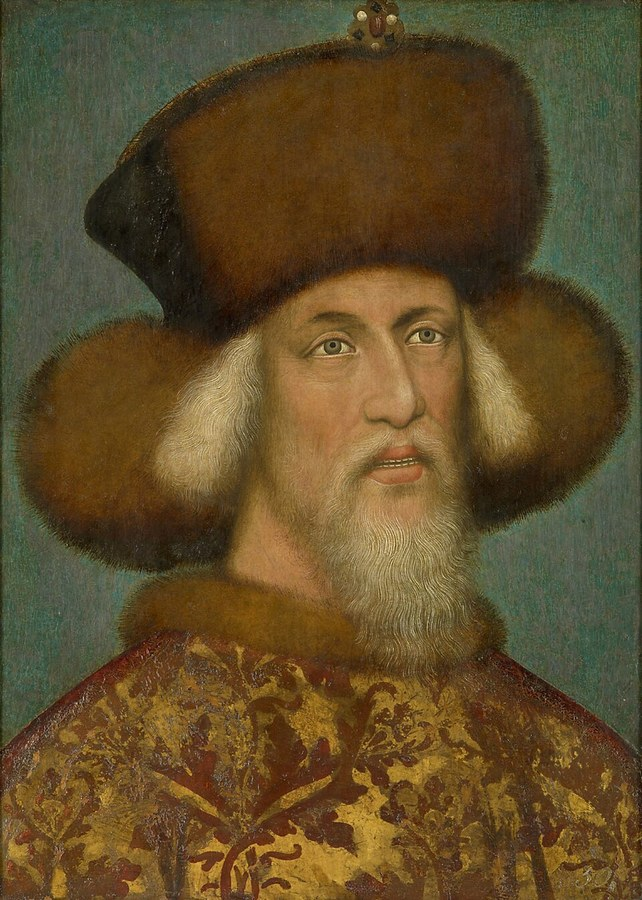

Sigismund of Luxembourg¶
Summary¶
Sigismund of Luxembourg (15 Feb 1368 - 9 Dec 1437), King of Hungary from 1387, King of the Romans from 1411, King of Bohemia (1419/1436) and Emperor from 1433, is the ally-turned-temptation of Book IV. At Lutsk in January 1429 he offers Vytautas a crown, partly to fight the Turks, partly to break the Polish-Lithuanian union that he sees as a threat. In the saga Henė sits at his table as a jester from 1429 to 1430 and the offered crown is the Shadow-Seller’s last bargain; when the crown is stopped on the Polish border in August 1430, Sigismund withdraws and Vytautas dies uncrowned.
Sigismund of Luxembourg

Sigismund of Luxembourg · character — Image: Pisanello (attributed), Public domain via Wikimedia Commons¶

Tipas |
veikėjas |
Metai |
1368–1437 |
Status |
Istoriniai duomenys |
Pastaba |
King of Hungary, Croatia, Germany and Bohemia, Holy Roman Emperor; allied with Vytautas and sender of the crown. |
Appearance & tells¶
Tall, with a carefully groomed forked beard and always dressed in gold-threaded velvet, smelling of incense and expensive wine; a magnetic, actor-like presence. He is courteous, charming and a little deceptive: the ultimate diplomat, who uses other people’s ambitions against them. At Lutsk he is the last of the great guests to arrive (20 January), with Queen Barbara, and the offer comes not in a hall but on a sleigh ride over the frozen Styr, in Latin whispered into Vytautas’s right ear with a Hungarian driver who understands neither Latin nor Lithuanian and Henė riding on the rear board (Book IV ch. 19). By 1428 the king of Hungary has had to flee the Turks at Golubac (Book IV ch. 17) and is „almost twenty years“ younger than Vytautas.
Want · Need · Lie · Truth¶
Want (external) |
Chaos among his neighbours, so that he remains the arbiter; a Lithuanian crown as a wedge to split Poland from Lithuania; allies against the Ottomans. |
Need (internal) |
To defend Christendom in earnest: he truly fears the Turks, but his methods keep failing. |
Lie they believe |
Everyone has a price and can be steered by ambition; a crown given in play will be taken seriously by the one who receives it. |
Truth they learn (or refuse) |
Refused: the crown does not arrive; Vytautas dies, Jogaila’s Poland holds, and Sigismund’s play collapses. |
Arc by book¶
Book III (Dec 1409). King of Hungary for twenty-two years, he has taken the Order’s money (the news comes to the Brest council, ch. 13; Sofija’s note says he is still counting the Order’s gold and has not marched, ch. 21) and threatens Poland from the south in rhetoric only (ch. 24).
Book IV (1420-1430). The Breslau award (1420) went against Poland (ch. 12); in 1428 Henė leaves Vytautas’s court with two stones and the golden chain and turns up at Sigismund’s table, where the king, „who wants the Polish-Lithuanian union split“, sees a Lithuanian crown as the wedge (ch. 17). At Lutsk (Jan 1429) he makes the offer on the Styr sleigh: coronation in Vilnius on 8 Sep 1430, a crown of Kremnica gold, „no conditions“ (ch. 19); Vytautas says „Yes“. The crown embassy is blocked (ch. 20-21); when it fails Sigismund is ~62 in Buda, withdrawn (ch. 24).
Book V. Only a memory: Švitrigaila recalls the kings who sat at Lutsk eight years earlier and was not invited (ch. 15).
Power & magic¶
Tier 0. The Gold-Glutton (Aukso Rijūnas, Latin Mercator-Rex) prospers around him and flatters him, and Henė serves as his jester in 1429-30, but Sigismund has no gift of his own. The crown he offers is made of Kremnica gold and is the Shadow-Seller’s last offer; its true price (the flame) is paid only by Vytautas, who refuses it in Book IV ch. 22.
Record vs saga¶
[Historical record]: Born 15 Feb 1368 at Nuremberg or Prague; crowned King of Hungary on 31 Mar 1387 (married Mary of Hungary 1385); led the crusade defeated at Nicopolis (25-28 Sep 1396); founded the Order of the Dragon after the Dobor victory of 1408; allied with the Teutonic Order against Jagiełło in 1410; he did not lead a full royal campaign, but Stibor invaded southern Poland that autumn; elected King of the Romans in 1410 and re-elected on 21 Jul 1411, crowned at Aachen on 8 Nov 1414; the driving force behind the Council of Constance (1414-18), where Hus was burned on 6 Jul 1415; King of Bohemia from 1419, beaten by Jan Žižka at Kutná Hora (Dec 1421), accepted in Bohemia only in 1436; arbitrator of the Breslau award (6 Jan 1420), which went against Poland; Emperor crowned in Rome on 31 May 1433; died 9 Dec 1437 at Znojmo. At Lutsk (9-29 Jan 1429) he arrived late, on 20 Jan, with Barbara of Celje (m. 1405/06); he proposed a crown to Vytautas, Jogaila first agreed and then withdrew after the Polish council (Oleśnicki, Oporowski, Tarnów). The planned coronation date was 15 Aug 1430, moved to 8 Sep and then by Vytautas to 29 Sep; his courtiers Baptista Cigala and Sigismund Roth were robbed on the Neumark border before 19 Aug 1430 by Jan Czarnkowski’s guards, and the main embassy (Archbishop Günther of Magdeburg, Dukes Přemek of Opava and Ludwig of Brzeg-Liegnitz) waited at Frankfurt an der Oder and turned back. The crown itself was never seized. He was King of the Romans, not yet emperor, in 1429.
[The saga’s invention]: Henė at his table as jester; the sleigh-ride offer on the Styr (the record says only that he proposed it at Lutsk); his stated motives („3,000 horsemen against the Turks without Kraków’s leave, the Order stops treating Lithuania as Poland’s appendage, and Poland splits“); his fleeing the Turks „this summer“ (the 1428 Golubac fiasco). The Gold-Glutton’s flattery is invention.
Tarimas¶
zig-MAN-tas lyook-sem-boor-GYEH-tis (Lithuanian Zigmantas Liuksemburgietis) · IPA /zʲɪɡˈmɐntɐs lʲʊksʲɛmbʊrˈɡʲiɛtʲɪs/ · English sound-alike „zig-MAHN-tahs lyook-sem-boor-GYEH-tis“. In English Sigismund (SIG-is-mund); German Sigmund, Hungarian Zsigmond. Do not confuse with Žygimantas Kęstutaitis.
Appearances¶
Book III: ch. 13 (the news at Brest), 21, 24 and the afterword.
Book IV: ch. 12, 14 (Oleśnicki’s letter to him), 17-22 (the Lutsk offer is ch. 18-19), 24 and the afterword.
Book V: ch. 15 (the Lutsk congress recalled).
Sigismund is king of the Romans and Hungary only, not emperor, until 1433; his age (b. 1368) makes him „almost twenty years“ younger than Vytautas (Book IV ch. 19).
Ryšiai
Ally: Vytautas (1429–1430)
Member of: House of Luxembourg
Servants: Šešėlių Pardavėjas / Henė (1429–1430) — Jester at his court; serves the deal.
Took part in: Congress of Lutsk: the crown offered
Chronologija¶
Year |
Event |
Book |
|---|---|---|
1429 |
IV · Nematoma Karūna |
Sąsajos¶
graph LR
ev_lutsk["Congress of Lutsk: the crown offered"]
luxembourg["House of Luxembourg"]
shadow_seller["Šešėlių Pardavėjas / Henė"]
sigismund["Sigismund of Luxembourg"]
vytautas["Vytautas"]
sigismund -->|Took part in| ev_lutsk
sigismund -->|Member of| luxembourg
vytautas -->|Ally| sigismund
shadow_seller -->|Servant of| sigismund
style sigismund stroke-width:3pxThe limited Hungarian intervention must be distinguished from Sigismund’s own movements: PAN historical-geographical dictionary, Miastko, note 8. See History and the Saga.